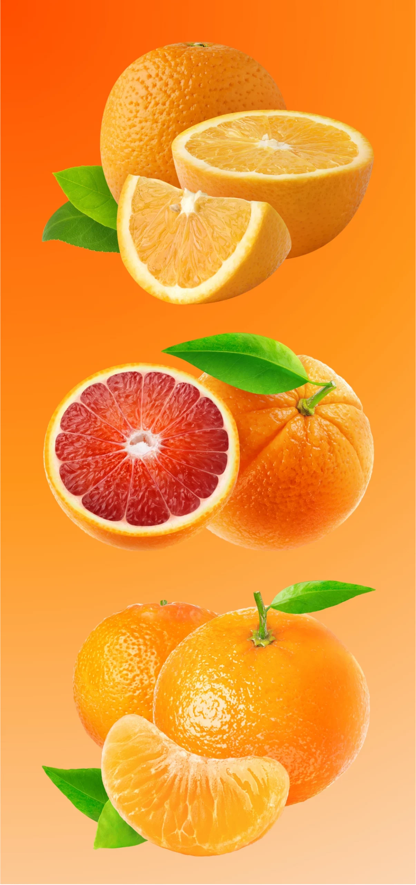

01
Kontakt aufnehmen
Formular ausfüllen, anrufen oder an contact@sicitry.com schreiben.
Direkt vom Bauernhof in Sizilien zu Ihnen. Von der 10-kg-Kiste bis zur Palette, auf Wunsch in regelmäßigen Teillieferungen über die ganze Saison.
Am Baum voll ausgereift, handverlesen, ohne lange Lagerzeiten und ohne künstliche Eingriffe. Nur Natur.

Formular ausfüllen, anrufen oder an contact@sicitry.com schreiben.
Welche Früchte, welche Mengen, wie oft beliefert werden soll.
Ernte, Verpackung und Lieferung, alles aus einer Hand.
10 kg pro Kiste. Sie stellen die Kiste aus unseren saisonalen Bio-Zitrusfrüchten nach Wunsch zusammen.
Ja: 6 x 10-kg-Kisten, bis zu 45 € gespart. Wählen Sie zwischen Zitrus-Mix-Kiste und Orangen-Kiste, und ob alles auf einmal oder zum Beispiel alle 2 Wochen kommt.
Ja, für Palettenmengen gibt es individuelle Rabatte. Rufen Sie an unter 0151 67246288.
Absolut. Mit dem Vorteilspaket oder individuell geplanten Teillieferungen sind Sie die ganze Saison versorgt.
Je nach Saison blonde Orangen, Blutorangen, Zitronen, Clementinen und Limetten, dazu Granatäpfel und Olivenöl.
In der Regel in 5 bis 7 Tagen. Teillieferungen stimmen wir individuell mit Ihnen ab.
Ja, zu 100 Prozent: ohne künstliche Begasung, ohne Wachs, mit natürlicher Schale direkt vom Baum.
Gern. Testen Sie zuerst eine kleinere Menge und überzeugen Sie sich von der Qualität.
Seit über 15 Jahren biologisch, darüber hinaus regenerativ. Ausgezeichnet mit dem Wildlife Estate Label.
Telefonisch unter 0151 67246288. Georg berät Sie persönlich.